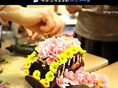
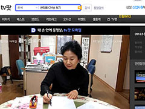
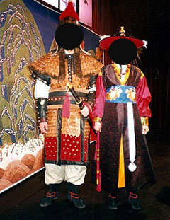
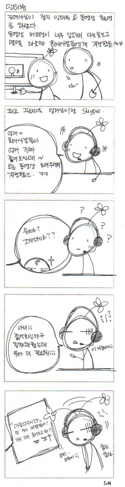
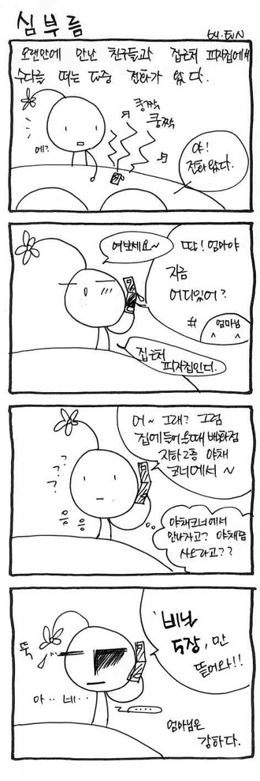
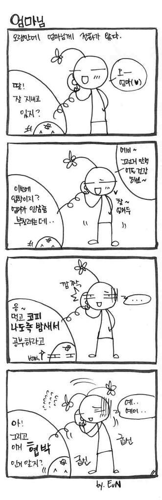

5월달 세이플로리 란 잡지에 엄마님 인터뷰가 실렸단다

그리고 이건 동영상 인터뷰
버퍼링이 너무 심해서 앞 10초? ;ㅂ; 정도밖에 못봤음...OTL
전통차 / 다화(茶花) 슨생님인 김여사님
덕분에 난 고3 수능직후 잊지못할 추억을 하나 만드는데
그거슨
.
.
.
.
.
.
.
.
.
.
.
.
.

바로요것.......OTL
왼쪽 동생곰 오른쪽 나;;;
수능직후 집에서 뒹구는 나를 호출
이날 무슨 아름다운 전통옷~어쩌구해서
패션쇼비스끄무리하게 하는 행사가 있었더랬다;;
그때 방송국에서 사용하는 옷 협찬받아서
스텝들이 와서 직접 분장도 다 해주고 그랬었더랬지
그리고 난 동생곰과 함께 가짜수염도 붙여보고;;;;;;
어흑 ;ㅂ; 다른애들은 어사화에 도련님복장에
왕비복장이다 뭐다 해서 얇고가벼운옷 입고 춥다고 달달떠는데
갑옷입은 동생이랑 포도대장옷 입은 나만 얼굴이 벌~게져서
대기시간 기다렸던게 생각난다^^;;;;;
(동생곰이 입었던 저 장군복 금속장식이 진짜 다 쇠로 만들어져서
무지무지하게 무거웠다 ㅡㅡ;; 저걸입고 촬영을 한단말인가;; 대단;;;;)
내얼굴에 마구 가짜수염을 붙여주던 스텝분에게
거의 혼이 나간상태로
"전 왜 수능끝나고 이 꽃다운나이에 수염을 붙이고있어야할까요 ㅡㅡ;"
라고 물어봤던것도 아직도 생각나 ㅋㅋㅋㅋㅋㅋㅋㅋ
분장마친뒤 둘이 거의 정신줄놓고 대기실에서 기다리고있으니까
지나가면서 사람들이
"어이쿠 형보다 동생이 더 키가크네~"
"형이랑 동생이야? 둘이 닮았네~" 등등 이야기를 들었었더랬지OTL
나....나름 잼난 경험이었어욤☞☜
어릴적부터 엄마님덕분에
전통관계례식 이라던가 전통차같은
지금생각해보면 잼난기억이 많다 :)
하지만 밖에서는 우아(?)한 슨생님일지 몰라도
집에서는 그냥 김여사라는거 ㅋㅋㅋㅋㅋㅋㅋ
김여사 인터뷰 기념 포풍디스(?)로 백만년만에 런박을 그렸다
2002~2006년도 사이 끄작대던 4컷만화들인데
갑자기 생각나서 옛날파일 뒤지고 오늘 점심시간에 후다닥 그렸음^^

그리고 요 아래건 2004년도에 그린거^^ ↓


김여사 보고싶어용 ;ㅂ;
전화통화하자고 하믄 맨날 바쁘다구 하시구..........OTL